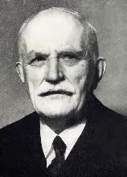
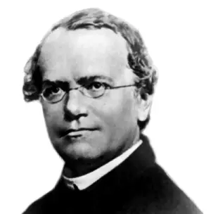

We are excited to announce
The 16th International Colloquium on Endocytobiology and Symbiosis
Following the previous meeting of this series, held in 2023 in Chicago, we are now moving to Europe—specifically to a city located exactly on (and divided by) the historical border between Moravia and Silesia. The meeting, held under the auspecies of the International Society of Endocytobiology, will cover diverse aspects of the biology of endosymbionts, organelles, and related topics. Therefore, if you work in these fields or are simply curious about them, do not hesitate to join us.

The meeting will have two special features. First, it will commemorate the Czech biologist Karel Šulc . He spent the first two decades of the 20th century in (what is now) Ostrava, working as a physician while, in his spare time, investigating the microanatomy of insects. This research led him to the discovery of endosymbionts in some insect species such as cicadas. He was twice nominated for the Nobel Prize, and the extensively studied endosymbiotic bacterium Candidatus Karelsulcia was named in his honour, underscoring the significance of his scientific achievements.

Second, the conference dinner will be held in the village of Hynčice near Ostrava, at a beautiful estate where Gregor Mendel was born and raised. We believe that many biologists may welcome the opportunity to make a pilgrimage to this remarkable place!
CONFIRMED SPEAKERS
-
Ivan Čepička
Charles University, Prague, Czech Republic
-
Vladimír Hampl
Charles University, Prague, Czech Republic
-
Yuji Inagaki
University of Tsukuba, Tsukuba, Japan
-
Nicholas A. T. Irwin
Gregor Mendel Institute, Austrian Academy of Sciences, Vienna BioCenter, Vienna, Austria
-
Anna Karnkowska
University of Warsaw, Warsaw, Poland
-
Fay-Wei Li
Boyce Thompson Institute, Ithaca, USA
-
F. Vanessa Loiacono
Charles University, Prague, Czech Republic
-
Piotr Łukasik
Jagiellonian University, Kraków, Poland
-
Jana Milucka
Max Planck Institute for Marine Microbiology, Bremen, Germany
-
Eva C. M. Nowack
Heinrich Heine University, Düsseldorf, Germany
-
Miroslav Oborník
Biology Centre, Czech Academy of Sciences, České Budějovice, Czech Republic
-
Frederik Schulz
DOE Joint Genome Institute, Lawrence Berkeley National Laboratory, USA
-
Vyacheslav Yurchenko
University of Ostrava, Ostrava, Czech Republic
PROGRAM & FORMAT
The final program will depend on the number of participants and will be announced after the registration deadline.
Please note that the meeting is scheduled to take place in person only . Streaming of presentations will not be available.
EARLY CAREER PRIZES
During the symposium, two prizes will be awarded among participating early career scientists (students and postdocs within the first four years after obtaining their degree):
ISE Prize for an outstanding oral presentation
Peter-Sitte Prize for an outstanding poster presentation
LOCAL ORGANIZER
Marek EliášUniversity of Ostrava
Faculty of Science, Department of Biology and Ecology
Chittussiho 10, 710 00 Ostrava
Czech Republic
Email: marekelias1978@gmail.com
ORGANIZING COMMITTEE
Peter G. KrothPresident of the ISE
University of Konstanz, Germany
Ansgar Gruber
Secretary of the ISE
Biology Centre ASCR, Czech Republic